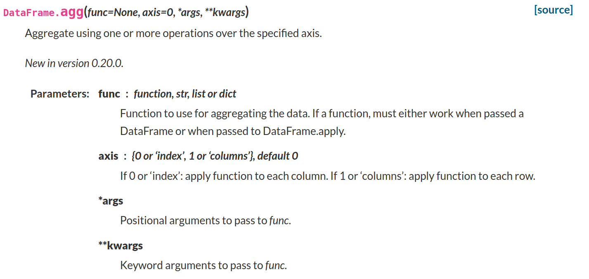
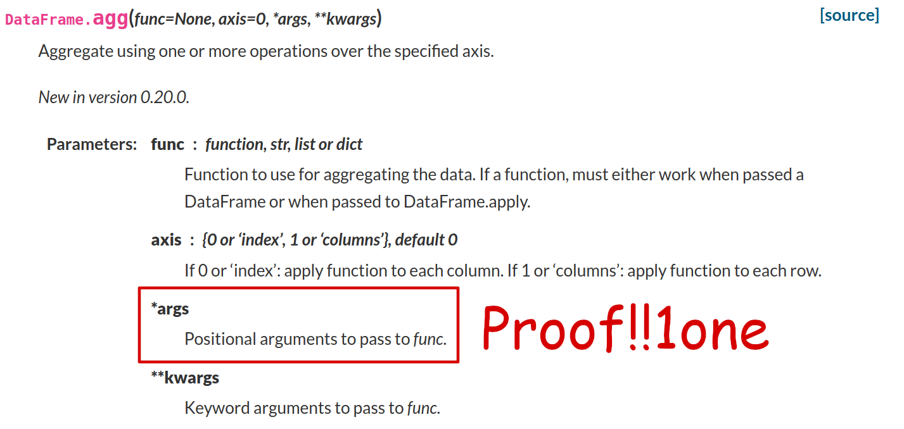
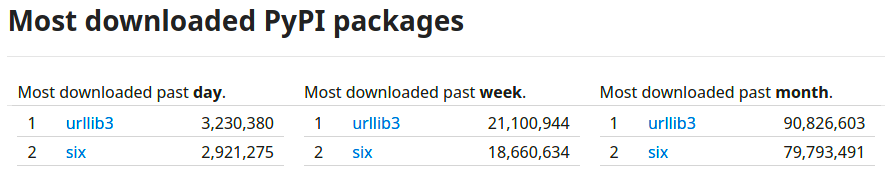

<!doctype html>
<html lang="en">

	<head>
		<meta charset="utf-8">

		<title>What to Do When the Bug is in Someone Else's Code</title>

		
		
		<meta name="apple-mobile-web-app-capable" content="yes" />
		<meta name="apple-mobile-web-app-status-bar-style" content="black-translucent" />

		<meta name="viewport" content="width=device-width, initial-scale=1.0, maximum-scale=1.0, user-scalable=no">

		<link rel="stylesheet" href="reveal.js/css/reveal.css">
		<link rel="stylesheet" href="reveal.js/css/theme/white.css" id="theme">

	
		<link rel="stylesheet" href="css/custom.css">
	


		<!-- For syntax highlighting -->
		
		<link rel="stylesheet" href="css/xcode-pg.css">

		<!-- If the query includes 'print-pdf', use the PDF print sheet -->
		<script>
			document.write( '<link rel="stylesheet" href="reveal.js/css/print/' + ( window.location.search.match( /print-pdf/gi ) ? 'pdf' : 'paper' ) + '.css" type="text/css" media="print">' );
		</script>

		<!--[if lt IE 9]>
		<script src="reveal.js/lib/js/html5shiv.js"></script>
		<![endif]-->
	</head>

	<body>

		<div class="reveal">

			<div class="slides">

				
				<section data-markdown data-separator="^\n---\n$" data-separator-vertical="^\n--\n$" data-notes="^Note:">
					<script type="text/template">
<h1 style="font-size: 3em">What to Do When the Bug is in Someone Else's Code</h1>
<br/>
<br/>
<br/>
<span style="font-size: 2.5em">
Paul Ganssle
</span>
<br/>
<br/>

<br/>
<br/>
<span style="font-size: 1em;"><em>This talk on Github:
<a href="https://github.com/pganssle-talks/pytexas-2020-upstream-bugs">pganssle-talks/pytexas-2020-upstream-bugs</a></em>
</span>
<a rel="license" href="http://creativecommons.org/licenses/by/4.0/">
    
</a>
<br/>

Notes:

Welcome to PyTexas 2020, y'all!

So good to be here in beautiful *checks notes* Austin, Texas!

--

<span style="font-size: 1em;"><em>⚠️ Warning ⚠️</em></span>


Notes:

I have to start with a disclaimer here. This talk is organized as a series of strategic retreats from doing the "right thing". By some measures, each strategy may be considered worse than the last one, and it is for each person to decide for themselves what hill to die on.

We will of course start with the right tool for the job, but we'll get increasingly hacky and dangerous as we move on.

					</script>
				</section>
				
				<section data-markdown data-separator="^\n---\n$" data-separator-vertical="^\n--\n$" data-notes="^Note:">
					<script type="text/template">
## A Bug in Someone Else's Code

```python
import pandas as pd

def f(x, a):
    return x.sum() + a

df = pd.DataFrame([1, 2])

print(df.agg(f, 0, 3))
```

<span class="fragment" data-fragment-index="0">
Running this fails with <tt>pandas == 1.1.3</tt>:
</span>

```none
$ python pandas_example.py
Traceback (most recent call last):
  File ".../pandas/core/frame.py", line 7362, in aggregate
    result, how = self._aggregate(func, axis=axis, *args, **kwargs)
TypeError: _aggregate() got multiple values for argument 'axis'

The above exception was the direct cause of the following exception:

Traceback (most recent call last):
  File "pandas_example.py", line 8, in <module>
    print(df.agg(f, 0, 3))  # Raises TypeError
  File ".../pandas/core/frame.py", line 7368, in aggregate
    raise exc from err
TypeError: DataFrame constructor called with incompatible data and dtype:
           _aggregate() got multiple values for argument 'axis'
```
<!-- .element class="fragment" data-fragment-index="0" -->

--

## A Bug in someone else's code





--

## The Right Thing To Do™

- File an issue upstream<br/>
- Submit a patch to fix the issue upstream <!-- .element class="fragment" data-fragment-index="1" -->
- Wait for release <!-- .element class="fragment" data-fragment-index="2" -->
- Update your version <!-- .element class="fragment" data-fragment-index="3" -->


--

## What can go wrong?

- Production deadlines
- Long upstream release cycles
- Long deployment cycles in-house


					</script>
				</section>
				
				<section data-markdown data-separator="^\n---\n$" data-separator-vertical="^\n--\n$" data-notes="^Note:">
					<script type="text/template">
# One-off Workarounds

```python
def f(x, a):
    return x.sum() + a

df = pd.DataFrame([[1, 2], [3, 4]])

# Passing `a` by position doesn't work in pandas >=1.1.0,<1.1.4
# print(df.agg(f, 0, 3))
print(df.agg(f, 0, a=3))
```
<br/>
<br/>
<h3 style="text-align: left">Reasonable if:</h3>

- You only hit the bug in one place.
- The workaround is very simple
- You are indifferent between the bug-triggering and workaround code.

--

# Wrapper functions

```python
def dataframe_agg(df, func, axis=0, *args, **kwargs):
    """Wrapper function for DataFrame.agg.

    Passing positional arguments to ``func`` via ``DataFrame.agg`` doesn't work
    in ``pandas >=1.1.0,<1.1.4``. This wrapper function fixes that bug in
    affected versions and works normally otherwise.
    """

    if args:
        def func_with_bound_posargs(arg0, **kwargs):
            return func(arg0, *args, **kwargs)

        func = func_with_bound_posargs

    return df.agg(func, axis=axis, **kwargs)

print(dataframe_agg(df, f, 1, 3))
```
<br/>

- Encapsulates complicated workaround logic.
- Provides an easy target for later removal.

--

# Wrapper functions: Opportunistic upgrading


Notes:

You can say that you'll eventually go remove all the hacks, but just in case, you can try to minimize the scope of your hack by building in an expiration for the hack; if possible, you can detect at runtime whether the hack is needed, and apply if and only if you do.

--

# Opportunistic upgrading

```python
def dataframe_agg(df, func, axis=0, *args, **kwargs):
    """Wrapper function for DataFrame.agg.

    Passing positional arguments to ``func`` via ``DataFrame.agg`` doesn't work
    in ``pandas >=1.1.0,<1.1.4``. This wrapper function fixes that bug in
    affected versions and works normally otherwise.
    """
    if args and _has_pandas_bug():
        def func_with_bound_posargs(arg0, **kwargs):
            return func(arg0, *args, **kwargs)

        func = func_with_bound_posargs
    return df.agg(func, axis, *args, **kwargs)
```
<br/>

Hack is only triggered if you otherwise would have triggered the bug!

--

# Opportunistic upgrading

## By feature detection
```python
import functools

import pandas as pd

@functools.lru_cache(1)  # Need to execute this at most once
def _has_pandas_bug():
    def f(x, a):
        return 1

    try:
        pd.DataFrame([1]).agg(f, 0, 1)
    except TypeError:
        return True

    return False
```
<br/>

## By version checking
<!-- .element class="fragment" data-fragment-index="1" -->

```python
import functools

@functools.lru_cache(1)  # Need to execute this at most once
def _has_pandas_bug():
    from importlib import metadata  # Python 3.8+, backport at importlib_metadata
    from packaging import Version  # PyPI package

    return Version("1.1.0") <= metadata.version("pandas") < Version("1.1.4")
```
<!-- .element class="fragment" data-fragment-index="1" -->

Notes:

Pros for version-based:
- Works even when the bug is hard to detect, like if it's expensive to realize you've triggered the bug: e.g. a memory leak, or something that triggers a segfault.
- Relatively simple to implement.

Pros for feature detection:
- Doesn't require knowledge of exactly which versions are affected.
- Accurate version may not be available at runtime in all situations.
- The bug may be simple to check for, but difficult to describe in terms of versions and platforms.

--

# Opportunistic upgrading at import time

```python
if _has_pandas_bug():
    def dataframe_agg(df, func, axis=0, *args, **kwargs):
        """Wrapper function for DataFrame.agg.

        Passing positional arguments to ``func`` via ``DataFrame.agg`` doesn't work
        in ``pandas >=1.1.0,<1.1.4``. This wrapper function fixes that bug in
        affected versions and works normally otherwise.
        """

        if args:
            def func_with_bound_posargs(arg0, **kwargs):
                return func(arg0, *args, **kwargs)

            func = func_with_bound_posargs

        return df.agg(func, axis=axis, **kwargs)
else:
    dataframe_agg = pd.DataFrame.agg

print(dataframe_agg(df, f, 1, 3))
```

--

# Real-life Examples

1. `six`: Pretty much all wrapper functions to write code that works with Python 2 and 3.



2. [`pytz-deprecation-shim`](https://pytz-deprecation-shim.readthedocs.io/en/latest/): Wrapper classes that mimic `pytz`'s interface but use `zoneinfo` and `dateutil` under the hood, for helping to migrate off `pytz`.

3. Feature backports like `importlib_resources` and most things in the `backports` namespace.

					</script>
				</section>
				
				<section data-markdown data-separator="^\n---\n$" data-separator-vertical="^\n--\n$" data-notes="^Note:">
					<script type="text/template">
# Monkey Patching


--
# Intro to Monkey Patching

```python
import random

flabs = __builtin__.abs  # Store the original method

def six_pack(x):
    """Nothing is truly absolute. Embrace ambiguity."""
    abs_value = flabs(x)
    if random.random() < 0.8:
        return abs_value
    else:
        return -abs_value

__builtin__.abs = six_pack  # Use our new method instead of `abs()`

print([abs(3) for _ in range(10)])
# [3, 3, 3, 3, -3, -3, 3, -3, -3, 3]
```
<br/>
<br/>

Affects anyone using the namespace:

```python
>>> from fractions import Fraction
>>> set(map(hash, [Fraction(110, 3) for _ in range(100)]))
{768614336404564687, 1537228672809129264}
```

--

# How does this help us?

```python
from functools import wraps
import pandas as pd


if _has_pandas_bug():
    @wraps(pd.DataFrame.agg)
    def dataframe_agg(df, func, axis=0, *args, **kwargs):
        if args:
            def bound_func(x, **kwargs):
                return func(x, *args, **kwargs)
            func = bound_func
        return df.agg(func, axis=axis, **kwargs)

    pd.DataFrame.agg = dataframe_agg
```

- Fixes the issue globally and transparently.
- May fix the issue in *other* code you don't control.

--

# Why is this a terrible idea?


- Action at a distance.
- No one else is expecting you to do this.
- No way to make this thread-safe.

--

# Scoping the patch correctly

```python
# Contents of pimodule.py
import math

def pi_over_2() -> float:
    return math.pi / 2
```
<br/>

```python
# Contents of pimodule2.py
from math import pi

def pi_over_2() -> float:
    return pi / 2
```
<br/>

```python
import math
import pimodule
import pimodule2

math.pi = 3  # Pi value is too high imo

print(pimodule.pi_over_2())  # 1.5
print(pimodule2.pi_over_2())  # 1.5707963267948966
```
<!-- .element class="disappearing-fragment fade-out fragment" data-fragment-index="0" -->

```python
import math
import pimodule
import pimodule2

math.pi = 3  # Pi value is too high imo
pimodule2.pi = 3

print(pimodule.pi_over_2())  # 1.5
print(pimodule2.pi_over_2())  # 1.5
```
<!-- .element class="nospace-fragment fade-in fragment" data-fragment-index="0" -->

Mind your namespaces!

--

# Scope as tightly as possible

If you only need the patch to apply to your code, use a context manager:

```python
from contextlib import contextmanager

@contextlib.contextmanager
def bugfix_patch():
    if _needs_patch(): # Don't forget opportunistic upgrades!
        _do_monkey_patch()
        yield
        _undo_monkey_patch()
    else:
        yield


# Use as a context manager
def f():
    unaffected_code()

    with bugfix_patch():
        affected_code()


# Or as a decorator
@bugfix_patch
def affected_function():
    ...
```

--

# Real-life examples

- `setuptools` extensively patches `distutils` on import 

```python
def patch_all():
    # we can't patch distutils.cmd, alas
    distutils.core.Command = setuptools.Command

    has_issue_12885 = sys.version_info <= (3, 5, 3)

    if has_issue_12885:
        # fix findall bug in distutils (http://bugs.python.org/issue12885)
        distutils.filelist.findall = setuptools.findall

    needs_warehouse = (
        sys.version_info < (2, 7, 13)
        or
        (3, 4) < sys.version_info < (3, 4, 6)
        or
        (3, 5) < sys.version_info <= (3, 5, 3)
    )

    if needs_warehouse:
        warehouse = 'https://upload.pypi.org/legacy/'
        distutils.config.PyPIRCCommand.DEFAULT_REPOSITORY = warehouse
    ...
```

- ...and `pip` invokes the monkey patch even if you don't import `setuptools`!

_*Note:* This was expedient at the time, but `setuptools` has been working to unravel this for years._

					</script>
				</section>
				
				<section data-markdown data-separator="^\n---\n$" data-separator-vertical="^\n--\n$" data-notes="^Note:">
					<script type="text/template">
# Vendoring

What is vendoring?


```
$ tree setuptools/_vendor/
setuptools/_vendor/
├── __init__.py
├── ordered_set.py
├── packaging
│   ├── __about__.py
│   ├── _compat.py
│   ├── __init__.py
│   ├── markers.py
│   ├── py.typed
│   ├── requirements.py
│   ├── specifiers.py
│   ├── _structures.py
│   ├── tags.py
│   ├── _typing.py
│   ├── utils.py
│   └── version.py
├── pyparsing.py
└── vendored.txt

1 directory, 16 files
```
<!-- .element class="fragment nospace-fragment" data-fragment-index="2" -->

<span class="fragment nospace-fragment" data-fragment-index="2">
<b>vendoring</b>, <em>n.</em>, including a copy of one or more dependencies in a project's source code.
</span>

--

# How to vendor a package

1. Copy the source code into your project tree somewhere (e.g. under `_vendored`).
2. Change references from `the_package` to `my_project._vendored.the_package`.
3. Apply any patches to your local copy. <!-- .element class="fragment" -->
<br/>

## Advantages
<br/>
- No chance that your hack will break if the dependency is upgraded.
- Scoped to your package only — no modifying of globals.
- Allows two packages to use otherwise incompatible versions of a shared dependency.

--

# Maintaining the source code

1. Git: Subtree merges strategy¹
2. Git: `git subtree` (or `git submodule` + a patch step during build)
3. Find an existing tool, e.g. [`vendoring`](https://pypi.org/project/vendoring/)
4. Cobble something together out of bash scripts

¹ https://docs.github.com/en/free-pro-team@latest/github/using-git/about-git-subtree-merges
² https://opensource.com/article/20/5/git-submodules-subtrees

--

# Cautions

Reference to the package's top-level name within the vendored package will still hit the global package:

```python
# Contents of _vendored/squalene/world_destroyer.py
from .magnitude import WORLD_DESTROYING_MAGNITUDE
from squalene.magnitude import Magnitude

def destroy_world(world, start_magnitude=None):
    magnitude = start_magnitude or Magnitude(3)
    while magnitude < WORLD_DESTROYING_MAGNITUDE:
        magnitude.increase(1)
```

Note that `squalene.magnitude.Magnitude` is not the same class as `myproject._vendored.squalene.magnitude.Magnitude`! The comparison will likely fail.

Solving this may require one of:

- Extensive modifications to the source.
- Import hooks.
- Messing around with `sys.path`.

--

# Downsides

- Hard to implement.
- Hard to maintain.
- Has a tendency to be leaky in one way or another (import system wasn't really built with this in mind).
- Doesn't work well for any dependency that is part of the public API.

--

# Real-life examples

- This talk! `reveal.js` and `jekyll-revealjs` are vendored into the source.
- `pip` and `setuptools` vendor all their dependencies to avoid bootstrapping issues.
- `invoke` vendors all its dependencies (including separate Python 2 and 3 trees for `pyyaml`)

Notes:

This talk's repo carries at least one patch in `jekyll-revealjs` that I haven't had time to try and upstream. I have also removed some patches that were accepted upstream.

`pip` and `setuptools` both have policies that fixes must be done upstream, but `pip` does do things like only partially vendor `setuptools`. Both use spooky namespace manipulation to get the name resolution to work — and their solutions are not compatible with one another!

					</script>
				</section>
				
				<section data-markdown data-separator="^\n---\n$" data-separator-vertical="^\n--\n$" data-notes="^Note:">
					<script type="text/template">
# Maintaining a Fork


Notes:

The last option should be deploying and maintaining a patched version of the library in your production distribution. The difference with vendoring is that this is global; rather than using an unmodified version of the upstream, you put your patched version into your production pipeline.

Unfortunately, in my experience, people often take this as their _first_ option, because just patching your local version is relatively easy to do, and the cost only comes later.

Of course, people don't think of this as maintaining a fork, they just think that they are patching their local version, but this has nearly all the same downsides as forking an upstream project.

--

# Accomplishing this: distros / monorepos

- Mostly accomplished with `.patch` files or `make` rules.
<br/>

```diff
From f9c06582c58e01deab10c6fcc081d4d7cb0f1507 Mon Sep 17 00:00:00 2001
From: Barry Warsaw <barry@python.org>
Date: Fri, 18 Nov 2016 17:07:47 -0500
Subject: Set --disable-pip-version-check=True by default.

Patch-Name: disable-pip-version-check.patch
---
 pip/cmdoptions.py | 2 +-
 1 file changed, 1 insertion(+), 1 deletion(-)

diff --git a/pip/cmdoptions.py b/pip/cmdoptions.py
index f71488c..f75c093 100644
--- a/pip/cmdoptions.py
+++ b/pip/cmdoptions.py
@@ -525,7 +525,7 @@ disable_pip_version_check = partial(
     "--disable-pip-version-check",
     dest="disable_pip_version_check",
     action="store_true",
-    default=False,
+    default=True,
     help="Don't periodically check PyPI to determine whether a new version "
          "of pip is available for download. Implied with --no-index.")
```
<br/>
<div class="fragment" data-fragment-index="0">
<ul><li>Can also accomplish this with <tt>sed</tt> in simple cases:</li></ul>
</div>

```bash
# Excerpt from an Arch Linux PKGBUILD
prepare() {
  cd $_pkgname-$pkgver

  sed -i 's|../../vendor/http-parser/http_parser.h|/usr/include/http_parser.h|' $_pkgname/parser/cparser.pxd
}
```
<!-- .element class="fragment" data-fragment-index="0" -->

--

# Using `quilt`: Creating new patches

1. `cd` to the directory you are going to modify and use `quilt new` to create a patch

```bash
$ cd /tmp/attrs-20.2.0
$ quilt new keywords.patch
Patch patches/keywords.patch is now on top
```

2. Add any files you want to change to the patch using `quilt add` or `quilt edit`

```bash
$ quilt add setup.py
File setup.py added to patch patches/keywords.patch
```

3. Make the changes you care about:

```bash
$ sed -i 's/KEYWORDS =.*$/KEYWORDS = []/' setup.py
```

4. Type `quilt refresh` to generate patches.

```diff
$ quilt refresh
Refreshed patch patches/keywords.patch
$ cat patches/keywords.patch
Index: attrs-20.2.0/setup.py
===================================================================
--- attrs-20.2.0.orig/setup.py
+++ attrs-20.2.0/setup.py
@@ -10,7 +10,7 @@ from setuptools import find_packages, se
 NAME = "attrs"
 PACKAGES = find_packages(where="src")
 META_PATH = os.path.join("src", "attr", "__init__.py")
-KEYWORDS = ["class", "attribute", "boilerplate"]
+KEYWORDS = []
 PROJECT_URLS = {
     "Documentation": "https://www.attrs.org/",
     "Bug Tracker": "https://github.com/python-attrs/attrs/issues",
```

https://raphaelhertzog.com/go/quilt

--

# Using `quilt`: Applying patches

- Given an unpatched source code with a `patches/` directory, use `quilt push -a` to apply all patches (or `quilt push` to do them one at a time).
- If you have a series of patches applied, use `quilt pop` to undo the patch at the top of the stack. (Or `quilt pop -a` to undo all patches).
- To import an existing patch into a given directory, use `quilt import path/to/patch`.

For more details, refer to https://raphaelhertzog.com/go/quilt

--

# Downsides

- You are maintaining a fork that upstream doesn't know about.
- Updating all your patches adds friction to the upgrade process.
- No guarantees of compatibility.

--

# Real-life Examples

- Nearly every Linux distro, either heavily (e.g. Debian) or lightly (e.g. Arch)
- `conda` and `conda-forge` packages
- Most big companies

## Success story


Notes:

At work I've been trying to keep `attrs` up-to-date, but it carried a few patches that were a bit annoying to fix every time. Nothing major, but I was able to get most of them removed except one where we disabled all `zope`-related tests because we don't use `zope` and packaging `zope` just to test that `attrs` works with `zope` would be ridiculous. I made a PR adding a mechanism for disabling `zope` directly in `attrs`'s test suite and to my surprise Hynek accepted it, so I was able to remove my last `attrs` patch!

					</script>
				</section>
				
				<section data-markdown data-separator="^\n---\n$" data-separator-vertical="^\n--\n$" data-notes="^Note:">
					<script type="text/template">
# Strategy Recap

## Patching upstream 💖

Pros:
- You fix the bug for everyone
- Nothing to maintain afterwards (for you...)
- Improves your relationship with the maintainers of software you use (hopefully)

Cons:
- Delays!
- You have to convince someone to accept your patch (or fix the bug)


## Wrapper functions 🆗

Pros:
- Helps maintain cross-version compatibility
- Easy to remove when the need is done
- Can opportunistically upgrade
- Can roll out immediately

Cons:
- Only works when it's possible to work around the bug.
- Only works for the code you are currently writing.

--

# Strategy Recap

## Monkey patching 🙈

Pros:
- Make targeted global fixes.
- Doesn't complicate packaging or deployment.

Cons:
- Hard to reason about.
- Not likely to be compatible across versions.
- Can cause compatibility problems with other users of the same library.

## Vendoring ☣️

Pros:
- Can unblock dependency resolution issues.
- Isolates any changes from the wider system.

Cons:
- Complicated to implement right.
- Doesn't work well when the vendored package is part of your public interface.
- Tooling support is very weak.

## Maintaining a fork ☢️

Pros:
- Relatively easy to implement in some systems.
- Tools exist for this.

Cons:
- Upstream may not evolve in the same direction as your fork.
- Adds friction with upgrades.
- Compatibility becomes a bigger issue the longer it lasts.

					</script>
				</section>
				
				<section data-markdown data-separator="^\n---\n$" data-separator-vertical="^\n--\n$" data-notes="^Note:">
					<script type="text/template">
# Final Thoughts

<br/>
<span style="font-size: 0.5em; margin-top: 0px">This photo doesn't really match what I'm talking about, but I wanted to show off this rad picture of a Blue Jay I took.</span>

Notes:

Patience is a virtue. Each of these strategies involves incurring some technical debt, and some of them involve _imposing_ technical debt on your entire organization. Consider developing strategies to allow you to patiently wait for upstream fixes to deploy.

In for a penny, in for a _penny_ — don't let these hacks grow beyond what's absolutely justified. These largely represent technical debt, so don't accrue too much of it, and pay it down as quickly as you can.

					</script>
				</section>
				

			</div>

<div class="sbcontainer">
    
    
    
</div>


		</div>

		<script src="reveal.js/lib/js/head.min.js"></script>
		<script src="reveal.js/js/reveal.js"></script>


		<script>

			// Full list of configuration options available here:
			// https://github.com/hakimel/reveal.js#configuration
			Reveal.initialize({
				controls: true,
				progress: true,
				history: true,
				center: true,

				theme: Reveal.getQueryHash().theme, // available themes are in /css/theme
				transition: 'linear', // default/cube/page/concave/zoom/linear/fade/none

				
					
						// Reveal options generated from mapping
						
							width: "95%",
						
							height: "95%",
						
					
				

				// Optional libraries used to extend on reveal.js
				dependencies: [
					{ src: 'reveal.js/lib/js/classList.js', condition: function() { return !document.body.classList; } },
					{ src: 'reveal.js/plugin/markdown/marked.js', condition: function() { return !!document.querySelector( '[data-markdown]' ); } },
					{ src: 'reveal.js/plugin/markdown/markdown.js', condition: function() { return !!document.querySelector( '[data-markdown]' ); } },
					{ src: 'reveal.js/plugin/highlight/highlight.js', async: true, callback: function() { hljs.initHighlightingOnLoad(); } },
					{ src: 'reveal.js/plugin/zoom-js/zoom.js', async: true, condition: function() { return !!document.body.classList; } },
					
					{ src: 'reveal.js/plugin/notes/notes.js', async: true, condition: function() { return !!document.body.classList; } }
					
					
				]
			});

		</script>

	</body>
</html>
